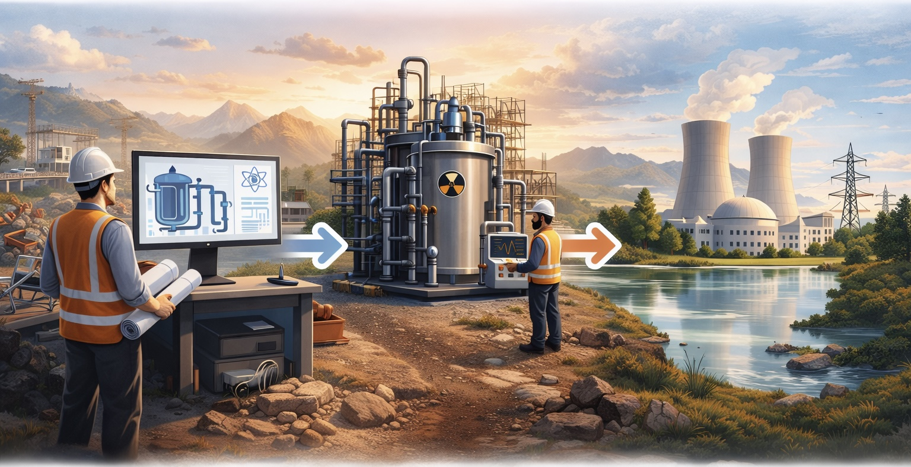

Comparée aux autres sources d'énergie, l'énergie nucléaire se distingue par sa complexité technologique, qui se traduit par un processus de développement plus long et plus structuré.
Seul un petit nombre de concepts atteignent le stade de prototype, et un nombre encore plus restreint aboutissent à des réacteurs exploités commercialement.
Dans cette section, les concepts et innovations de réacteurs sont classés selon leur stade de développement :